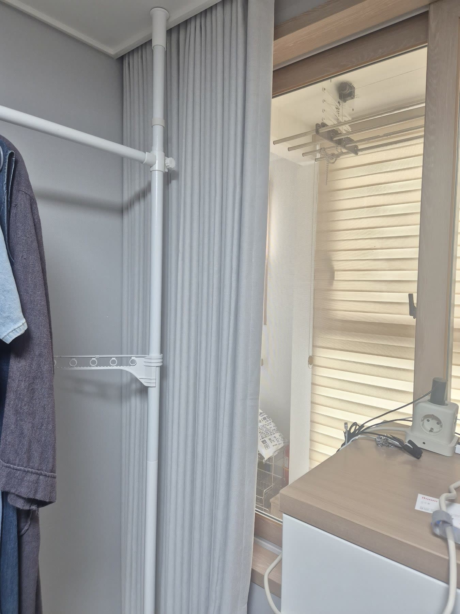
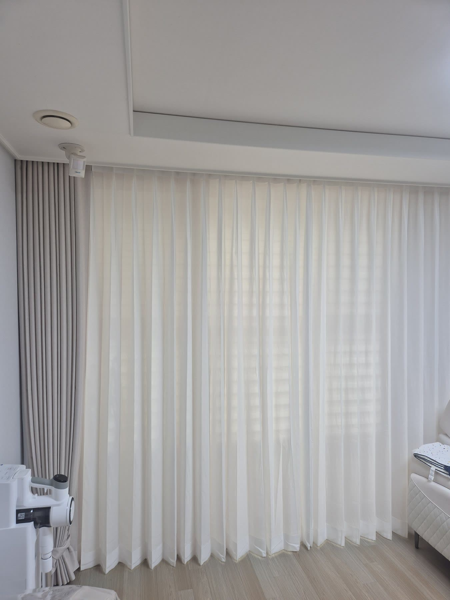
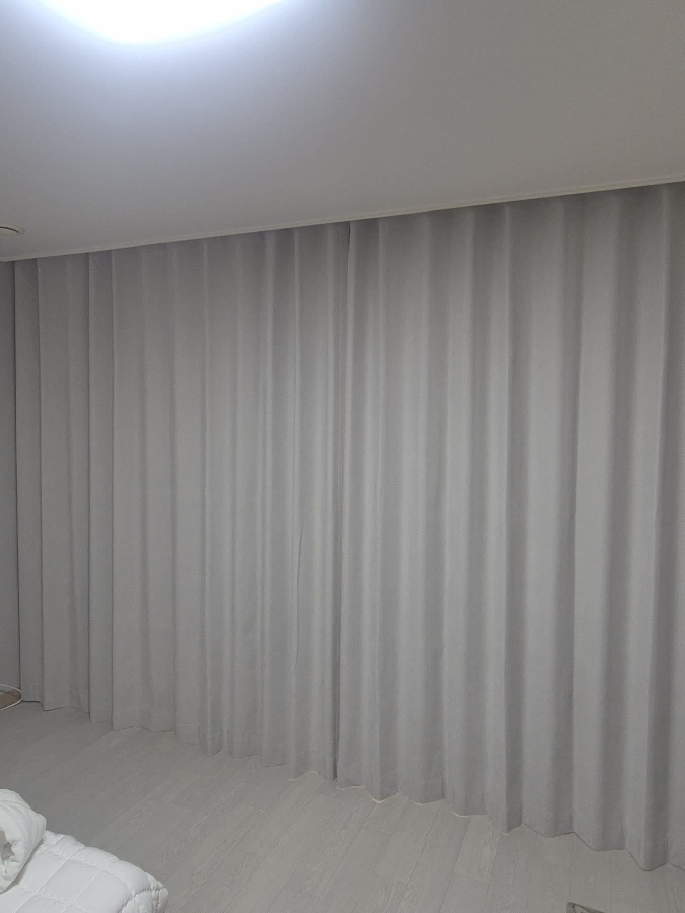
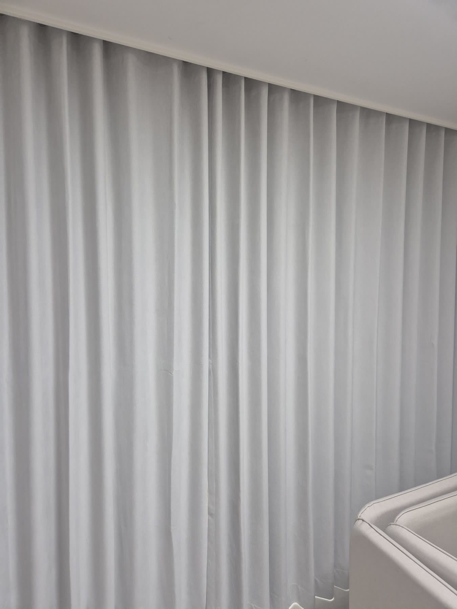

2026년 7월 10일 시공
경주 감포 사택
거실 2중커튼 · 안방 암막커튼 시공후기

경주 감포의 사택에 다녀왔습니다.
곧 첫아이를 만날 만삭의 고객님이 기다리고 계신 댁이었습니다.
아기가 태어나면 방마다 커튼을 어떻게 해야 할지 고민이 많으셔서, 공간마다 어떤 빛이 맞을지 하나씩 같이 골랐습니다.
저희도 아이를 키워봤기에, 그날은 제품을 파는 사람이 아니라 먼저 아이를 키워본 부모의 마음으로 함께 앉았습니다.

아기가 잘 방은, 잘 자는 게 먼저였습니다
안방과 작은방은 아기가 잠들 공간이라, 빛을 완전히 막는 100% 암막커튼으로 정했습니다.
아기는 낮잠이 정말 많은데, 방이 조금만 환해도 얕게 자다 자주 깹니다.
겨우 재웠는데 창으로 새어드는 햇빛에 깨어 울면 엄마도 진이 빠지죠.
100% 암막은 한낮에도 커튼만 치면 방을 밤처럼 어둡게 만들어 줍니다.
아침 햇살이든 저녁 가로등 불빛이든 들어오지 않으니, 아기가 자는 그 시간만큼은 엄마도 같이 숨을 돌릴 수 있습니다.
낮 동안 함께 지내는 거실은, 빛을 막기보다 부드럽게
거실은 결이 달랐습니다.
아기와 하루 대부분을 보내는 공간이라, 얇은 화이트 속커튼 위에 베이지 암막을 겹친 2중 커튼으로 했습니다.
평소에는 속커튼만 쳐 두면 햇빛이 천에 한 번 걸러져 눈부심 없이 은은하게 퍼집니다.
방은 환한데 눈은 편한, 아기와 지내기 딱 좋은 빛입니다.
속커튼이 낮 동안 바깥 시선도 한 번 걸러 줘서, 커튼을 다 치지 않아도 거실이 훤히 들여다보이지 않습니다.
볕이 너무 세거나 거실에서 아기를 잠깐 재워야 할 때는 베이지 암막까지 치면 됩니다.
한 창에서 상황에 맞게 빛을 조절할 수 있는 거죠.
주름은 두 배로 깊게 잡아, 커튼이 얇게 붙지 않고 풍성하게 흘러내리도록 볼륨감 있게 마무리했습니다.


색과 길이까지, 새 식구를 맞는 집답게
색은 그레이 벽지와 우드 창틀 사이에서 튀지 않고 자연스럽게 스며드는 베이지로 맞췄습니다.
아기와 지내는 집은 요란하기보다 편안한 게 좋으니까요.
커튼은 천장 가까이 높이 걸어 바닥까지 길게 내렸습니다.
세로 선이 길어져 창이 실제보다 커 보이고, 크지 않은 집도 한결 넓고 시원해 보입니다.
멀쩡한 기존 블라인드는 굳이 걷어내지 않고 그대로 두었습니다.
필요한 것만 더하는 게 맞지, 쓸 만한 걸 뜯어낼 이유는 없으니까요.
블라인드로 각도를 잡고 커튼으로 분위기와 차단을 더하니, 창 하나에서 빛을 다루는 폭이 훨씬 넓어졌습니다.

고객님의 바람과 저희 제안을 하나씩 맞춰 최종 결정을 하고, 그에 맞춰 제작해 설치까지 마무리했습니다.
돌아보면 이번 시공은 무슨 제품을 달았느냐보다, 어떤 마음으로 함께 골랐느냐가 더 기억에 남습니다.
새 식구를 기다리는 집이라 저희도 한 번 더 마음을 쓰게 된 시공이었습니다.
집 전체 커튼을 어디서부터 손대야 할지 막막하시다면, 공간마다 어떤 게 맞을지 같이 고민하는 것부터 시작하면 됩니다.
실측과 견적은 무료이고, 창 사진 한 장만 보내주셔도 대략적인 견적부터 안내해 드립니다.
경주를 포함한 대구·경북 전 지역, 새집이든 사택이든 편하게 문의 주세요.